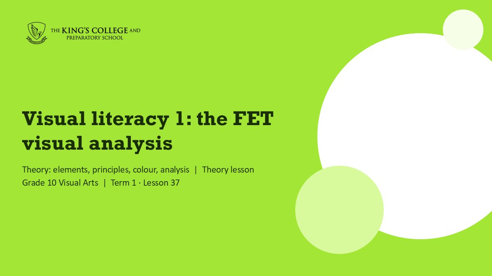

Term 1 · Lesson 37 · Theory lesson
Visual Literacy 1: The FET Visual Analysis
Start Here
Today I Will
- Name the four parts of an FET visual analysis
- Analyse an artwork together, part by part
- Understand the visual literacy project brief
'I like it because it is nice.' What would you need to add to make that sentence worth marks?
Words to Know
| Word | Meaning |
|---|---|
| Describe | Part 1: say what you see, where it is placed, the focal point, the mood, the style and the context. |
| Analyse | Part 2: explain how the elements and principles are used and what effect each one has. |
| Interpret | Part 3: explain what the artwork could mean, using symbols, content and context as evidence. |
| Opinion | Part 4: argue whether the artwork succeeds, supported by evidence, not only by taste. |
| Essay | A piece of continuous writing in paragraphs, with an introduction, a body and a conclusion. |
| Evidence | Specific details from the artwork that support what you say. |
Slides

Videos
Notes
The four parts of an FET visual analysis (Describe, Analyse, Interpret, Opinion) written as an essay; the visual literacy project brief.
From Five Levels to Four Parts
| Grade 8–9 level | FET part |
|---|---|
| 1. First reaction | Part 1: Describe (with mood and focal point) |
| 2. Formal analysis | Part 2: Analyse (elements and principles) |
| 3. Content | Part 3: Interpret (what could it mean?) |
| 4. Context (zeitgeist) | Part 1: Describe (context) and Part 3: Interpret |
| 5. Opinion supported by facts | Part 4: Opinion (is it successful?) |
Writing It as an Essay
- Introduction: Name the artwork and the artist (full name first, then surname) and say what you will do.
- Empirical data: Give the artist, title, medium, size and date under any image you include.
- Body: The four parts in order, each in clear paragraphs, never bullet points.
- Conclusion: Sum up how the visual choices create the meaning, and answer the question.
Describe what you see, analyse how it is made, interpret what it means, then judge whether it works.
Practical
You need: Theory booklet, projected artwork, project handout, visual journal
Shared Analysis, Then the Project Brief
- Describe together: list the subject matter, focal point, mood and context of the projected artwork.
- Analyse together: choose two elements and one principle and say for each what, where and effect.
- Interpret together: suggest what the work could mean, using evidence from the first two parts.
- Opinion: each learner writes one sentence judging whether the work succeeds, with a reason.
- Read the project handout and underline the hand-in date and the rubric headings.
- Write down two artworks you might choose for your project.
Visual literacy project issued (due Friday 2 April, on Google Classroom).
Test Yourself
- Name the four parts of an FET visual analysis in order.
- What three things must you say about each element in Part 2?
- Why does 'I like it' on its own earn no marks in Part 4?
Show answers
1. Describe, Analyse, Interpret, Opinion. 2. What the element is (identify), where and how it is used (describe), and what effect or function it has. 3. Personal taste is not an argument; an opinion must give a clear judgement supported by evidence from the artwork.
Finished Early?
Try all four parts of the FET analysis in miniature.
- Choose an artwork from your Theory or History booklet.
- Write one sentence for each part: Describe, Analyse, Interpret, Opinion.
- In the Analyse sentence, use the FET formula: identify, describe, effect.
- Check that your Opinion sentence gives a reason based on what you can see.